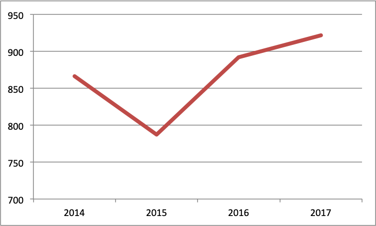
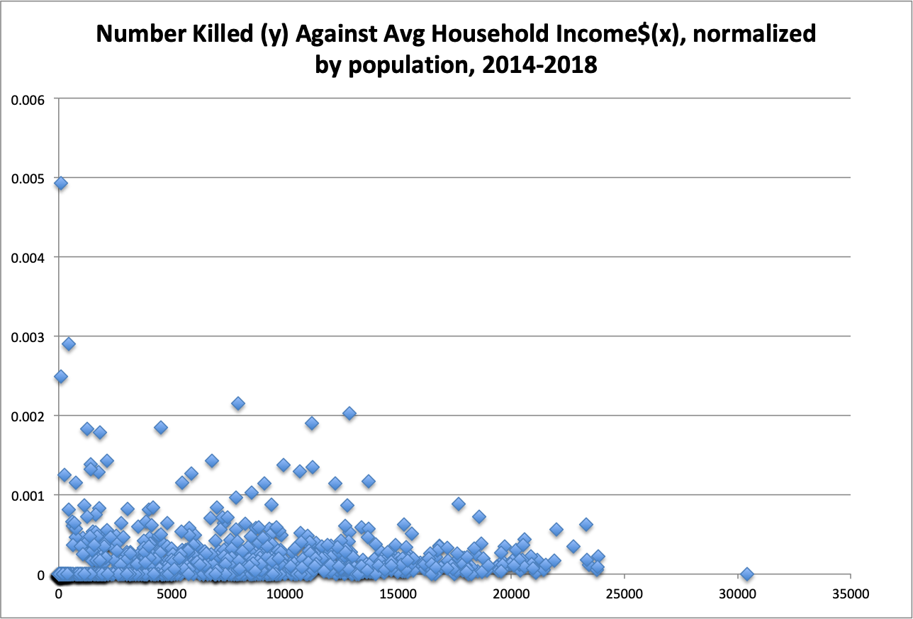
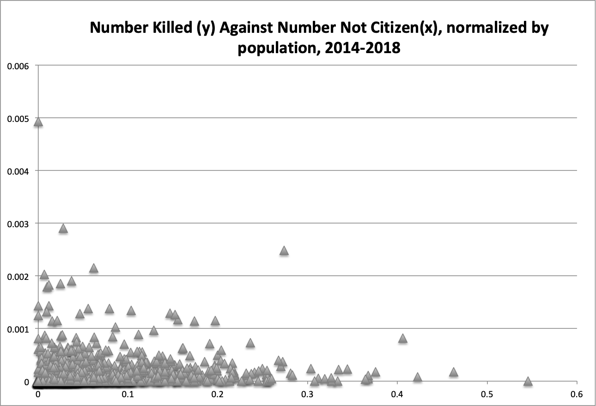

Figure1
total deaths per year, across all zipcodes, for years we have full data.
We can see that there is no clear trend up or down in total deaths over these 4 years

Figure2
We can see more deaths by population tend to happen in zipcodes in the middle income range
Points up the 0 axis of income can be disregarded as missing data

Figure3
There is actually a slight downward trend, as also revealed in DBSCAN, between higher amounts
non-citizens by population and gun deaths by population.
